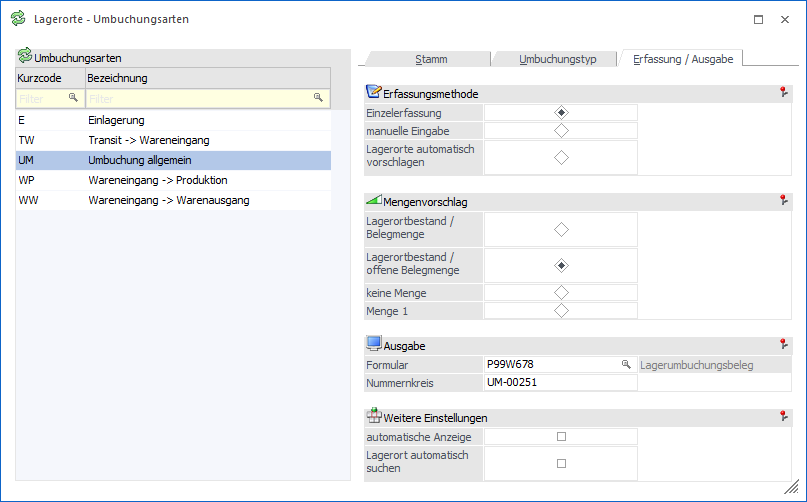
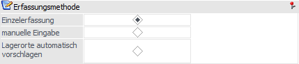
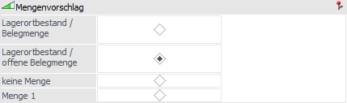
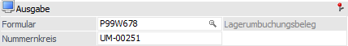
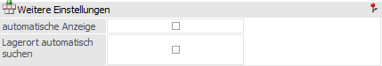

In diesem Register können u.a. Einstellungen für die Umbuchungserfassung hinterlegt werden.

Folgende Einstellungen stehen in diesem Register zur Verfügung:
Erfassungsmethode

Ø Erfassungsmethode
An dieser Stelle kann mit Hilfe eines Radiobuttons die Erfassungsmethode der Lagerorte gewählt werden.
ü Einzelerfassung
Nach der
Eingabe der Artikelnummer wird das Fenster "Lagerorte erfassen" geöffnet und
alle Orte mit passender Lagerortfunktion und Bestand angezeigt. Durch Anwahl des
Buttons "Ok" werden alle Lagerorte, bei denen eine Menge erfasst wurde, in das
Umbuchungsfenster übernommen.
Hinweis
Wenn kein Lagerort erfasst wurde (d.h. Feld "von Lagerort" ist leer), so kann das Fenster "Lagerorte erfassen" per Doppelklick im Feld "von Lagerort" wieder geöffnet werden.
ü manuelle Eingabe
Nach der
Eingabe der Artikelnummer kann in dem Feld "von Lagerort" per
Autovervollständigung oder Matchcode ein Lagerort ausgewählt werden.
ü Lagerorte automatisch
vorschlagen
Nach der Eingabe der Artikelnummer werden automatisch alle Orte
mit passender Lagerortfunktion und Bestand in die Tabelle eingefügt.
Hinweis
Die Art der Erfassungsmethode kann im Programm "Lagerorte - Umbuchung" jederzeit übersteuert werden.
Mengenvorschlag

Ø Mengenvorschlag
An dieser Stelle kann mit Hilfe eines Radiobuttons eingestellt werden, welche Menge zur Umbuchung vorgeschlagen werden soll.
ü Lagerortstand / Belegmenge
Es
werden in den Registern "Umbuchung" und "Merkliste" der Lagerortbestand und in
den Registern "Belege" und "Produktionsaufträge" die Belegmenge in der Spalte
"Menge" vorgeschlagen. Voraussetzung hierfür ist, dass mit der Erfassungsmethode
"Lagerorte automatisch vorschlagen" gearbeitet wird.
Hinweis
Durch Nutzung der Erfassungsmethode "Lagerorte automatisch vorschlagen" wird in den Registern "Belege" und "Produktionsaufträge" die Belegmenge von oben nach unten in den einzelnen Lagerortzeilen (je nach Bestand) heruntergerechnet, bis die gesamte Menge aufgeteilt ist.
ü Lagerortstand / offene
Belegmenge
Es werden in den Registern "Umbuchung" und "Merkliste" der
Lagerortbestand und in den Registern "Belege" und "Produktionsaufträge" die noch
offene Belegmenge in der Spalte "Menge" vorgeschlagen. Voraussetzung hierfür
ist, dass mit der Erfassungsmethode "Lagerorte automatisch vorschlagen"
gearbeitet wird.
Hinweis
Durch Nutzung der Erfassungsmethode "Lagerorte automatisch vorschlagen" wird in den Registern "Belege" und "Produktionsaufträge" die noch offene Belegmenge von oben nach unten in den einzelnen Lagerortzeilen (je nach Bestand) heruntergerechnet, bis die gesamte Menge aufgeteilt ist.
ü keine Menge
Es wird in der
Spalte "Menge" keine Menge, d.h. 0, vorgeschlagen.
ü Menge 1
Es wird in der Spalte
"Menge" die Menge mit 1 vorgeschlagen. Voraussetzung hierfür ist, dass mit der
Erfassungsmethode "Lagerorte automatisch vorschlagen" gearbeitet wird.
Hinweis
Die Art des Mengenvorschlags kann im Programm "Lagerorte - Umbuchung" jederzeit übersteuert werden.
Ausgabe

Ø Formular
An dieser Stelle kann ein Formular für den automatischen Druck des Lagerumbuchungsbelegs hinterlegt werden. Als Standard-Formular steht das Formular P99W678 zur Verfügung.
Ø Nummernkreis
In diesem Feld wird pro Umbuchungsart der Nummernkreis für das Protokoll und das Lagerortjournal definiert (20stellig, alphanumerisch).
Hinweis
Bei dem Speichern der Umbuchung wird die Nummer automatisch um 1 erhöht.
Beispiel für Nummernvergabe
Die Zählweise der Umbuchungsnummer erfolgt nach dem Schema, dass die letzte Stelle hochgezählt wird, d.h.:
ü aus 479-UM wird 479-UM1
ü aus UM-479 wird UM-480
Weitere Einstellungen

Ø automatische Anzeige
Wenn diese Option aktiviert ist, so wird bei der Eingabe einer Merkliste die Bildschirmtabelle sofort mit allen vorhandenen Artikeln gefüllt und nicht erst beim Drücken des Buttons "Anzeigen".
Ø Lagerort automatisch suchen
Mit dieser Option wird gesteuert, dass in der Umbuchung bei der Eingabe eines Artikels der "auf Lagerort" automatisch gesucht und vorgeschlagen wird. Hierbei wird neben den Lagerortfunktionen und Lagerortzuordnungen auch die Priorität des Lagerortes berücksichtigt.